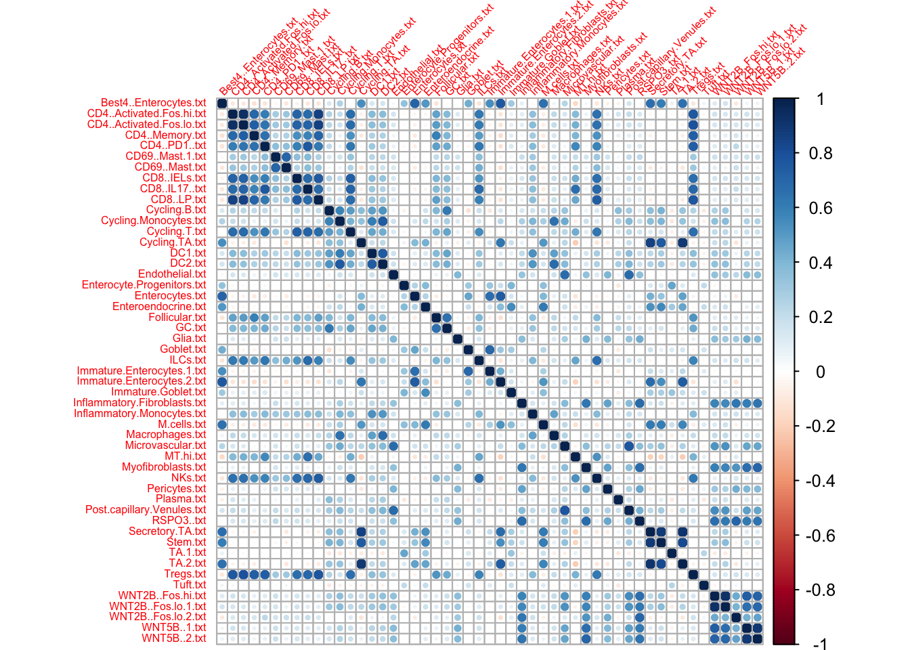
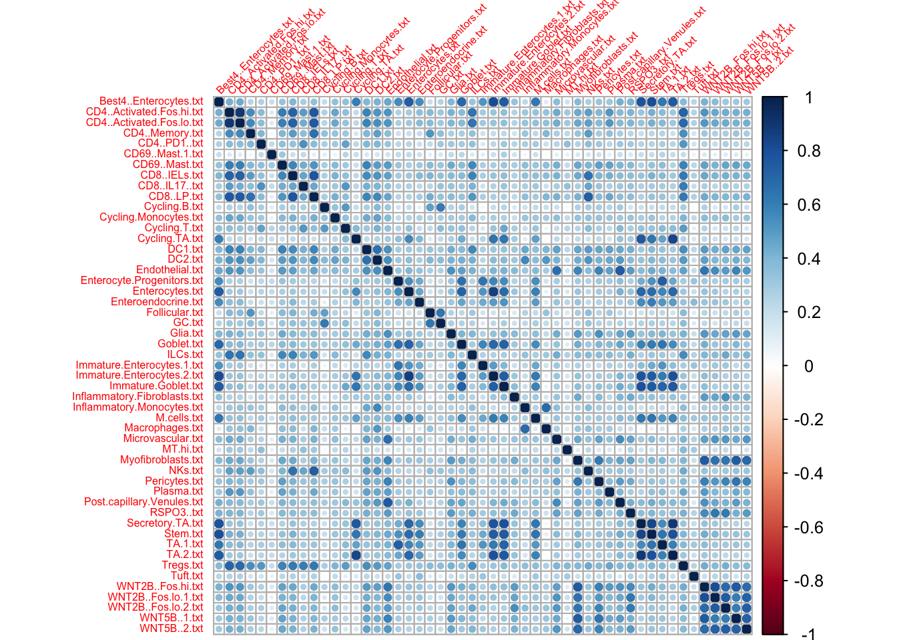
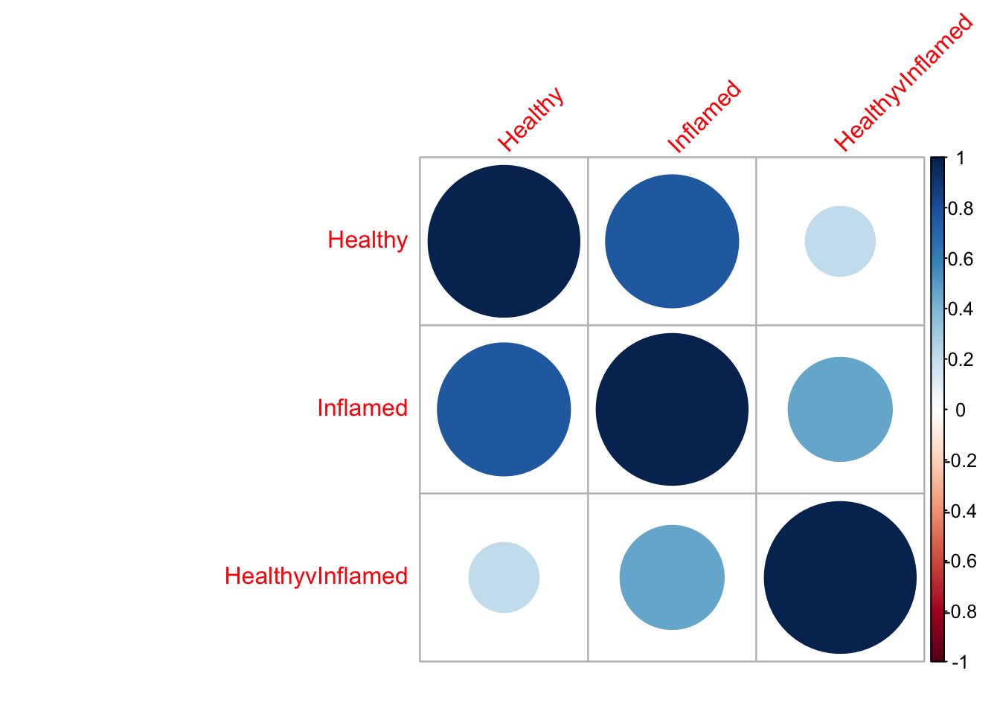

Comparison of Healthy, Inflamed and HealthyvInflamed scores
K. K. Dey, K. Jagadeesh and Alkes Price
2/1/2020
Last updated: 2020-02-04
workflowr checks: (Click a bullet for more information)-
✖ R Markdown file: uncommitted changes
The R Markdown is untracked by Git. To know which version of the R Markdown file created these results, you’ll want to first commit it to the Git repo. If you’re still working on the analysis, you can ignore this warning. When you’re finished, you can runwflow_publishto commit the R Markdown file and build the HTML. -
✔ Environment: empty
Great job! The global environment was empty. Objects defined in the global environment can affect the analysis in your R Markdown file in unknown ways. For reproduciblity it’s best to always run the code in an empty environment.
-
✔ Seed:
set.seed(20200127)The command
set.seed(20200127)was run prior to running the code in the R Markdown file. Setting a seed ensures that any results that rely on randomness, e.g. subsampling or permutations, are reproducible. -
✔ Session information: recorded
Great job! Recording the operating system, R version, and package versions is critical for reproducibility.
-
Great! You are using Git for version control. Tracking code development and connecting the code version to the results is critical for reproducibility. The version displayed above was the version of the Git repository at the time these results were generated.✔ Repository version: d3172fb
Note that you need to be careful to ensure that all relevant files for the analysis have been committed to Git prior to generating the results (you can usewflow_publishorwflow_git_commit). workflowr only checks the R Markdown file, but you know if there are other scripts or data files that it depends on. Below is the status of the Git repository when the results were generated:
Note that any generated files, e.g. HTML, png, CSS, etc., are not included in this status report because it is ok for generated content to have uncommitted changes.Ignored files: Ignored: .Rhistory Ignored: .Rproj.user/ Ignored: data/Healthy_gene_score_Top10_Feb1/ Untracked files: Untracked: analysis/IBD_HVI_modules.Rmd Untracked: analysis/IBD_LDSC.Rmd Untracked: analysis/IBD_scores_comparison.Rmd Untracked: analysis/README.Rmd Untracked: analysis/README.md Untracked: code/ALL_bedgraph_calc.R Untracked: code/IBD_healthy_modules.Rmd Untracked: code/baseline_strategies.R Untracked: code/build_module_annotations.R Untracked: code/build_module_annotations2.R Untracked: code/compute_sd_annot.R Untracked: code/curate_postprocessed_matrix.R Untracked: code/healthy_logfold_gene_scores.R Untracked: code/merge_annot_HVI_healthy_all.R Untracked: code/merge_annot_healthy_all.R Untracked: code/merge_annot_module_all_genes.R Untracked: code/postprocess_ldsc.R Untracked: code/workflow_process_modules.R Untracked: data/All_IBD_genes.txt Untracked: data/HealthyVInflamed_gene_score_Feb1/ Untracked: data/Healthy_gene_score/ Untracked: data/Healthy_gene_score_Feb1/ Untracked: data/Healthy_gene_score_Top10/ Untracked: data/Healthy_logfold.csv Untracked: data/Inflamed_gene_score_Feb1/ Untracked: data/Other_Gene_Scores/ Untracked: data/healthy_score.csv Untracked: data/healthyvinflamed_score.csv Untracked: data/inflameddata_score.csv Untracked: docs/figure/ Untracked: output/HVI_gene_score_Feb1_plus_Healthy_plus_All.rda Untracked: output/Healthy_gene_score_Feb1_plus_All_IBD.rda Untracked: output/IBD_51_modules_S_LDSC.rda Untracked: output/IBD_S_LDSC.rda
library(corrplot)corrplot 0.84 loadedlibrary(ggplot2)Warning: package 'ggplot2' was built under R version 3.5.2ll = list.files("/Users/kushaldey/Documents/singlecellLDSC/data/Healthy_gene_score_Feb1/")
ll [1] "Best4..Enterocytes.txt" "CD4..Activated.Fos.hi.txt"
[3] "CD4..Activated.Fos.lo.txt" "CD4..Memory.txt"
[5] "CD4..PD1..txt" "CD69..Mast.1.txt"
[7] "CD69..Mast.txt" "CD8..IELs.txt"
[9] "CD8..IL17..txt" "CD8..LP.txt"
[11] "Cycling.B.txt" "Cycling.Monocytes.txt"
[13] "Cycling.T.txt" "Cycling.TA.txt"
[15] "DC1.txt" "DC2.txt"
[17] "Endothelial.txt" "Enterocyte.Progenitors.txt"
[19] "Enterocytes.txt" "Enteroendocrine.txt"
[21] "Follicular.txt" "GC.txt"
[23] "Glia.txt" "Goblet.txt"
[25] "ILCs.txt" "Immature.Enterocytes.1.txt"
[27] "Immature.Enterocytes.2.txt" "Immature.Goblet.txt"
[29] "Inflammatory.Fibroblasts.txt" "Inflammatory.Monocytes.txt"
[31] "M.cells.txt" "Macrophages.txt"
[33] "Microvascular.txt" "MT.hi.txt"
[35] "Myofibroblasts.txt" "NKs.txt"
[37] "Pericytes.txt" "Plasma.txt"
[39] "Post.capillary.Venules.txt" "RSPO3..txt"
[41] "Secretory.TA.txt" "Stem.txt"
[43] "TA.1.txt" "TA.2.txt"
[45] "Tregs.txt" "Tuft.txt"
[47] "WNT2B..Fos.hi.txt" "WNT2B..Fos.lo.1.txt"
[49] "WNT2B..Fos.lo.2.txt" "WNT5B..1.txt"
[51] "WNT5B..2.txt" cc= c()
for(mm in 1:length(ll)){
df = read.delim(paste0("/Users/kushaldey/Documents/singlecellLDSC/data/Healthy_gene_score_Feb1/", ll[mm]), header=F)
cc = cbind(cc, df[,2])
}
colnames(cc) = ll
cormat = cor(cc)
corrplot(cormat, tl.cex = 0.5, tl.srt = 45)
cc= c()
for(mm in 1:length(ll)){
df = read.delim(paste0("/Users/kushaldey/Documents/singlecellLDSC/data/Inflamed_gene_score_Feb1/", ll[mm]), header=F)
cc = cbind(cc, df[,2])
}
colnames(cc) = ll
cormat = cor(cc)
corrplot(cormat, tl.cex = 0.5, tl.srt = 45)
cc= c()
for(mm in 1:length(ll)){
df = read.delim(paste0("/Users/kushaldey/Documents/singlecellLDSC/data/HealthyVInflamed_gene_score_Feb1/", ll[mm]), header=F)
cc = cbind(cc, df[,2])
}
colnames(cc) = ll
cormat = cor(cc)
corrplot(cormat, tl.cex = 0.5, tl.srt = 45)
Mean correlation across healthy, inflamed and healthyvinflamed
cormat = matrix(0, 3, 3)
for(mm in 1:length(ll)){
df = read.delim(paste0("/Users/kushaldey/Documents/singlecellLDSC/data/Healthy_gene_score_Feb1/", ll[mm]), header=F)
df2 = read.delim(paste0("/Users/kushaldey/Documents/singlecellLDSC/data/Inflamed_gene_score_Feb1/", ll[mm]), header=F)
df3 = read.delim(paste0("/Users/kushaldey/Documents/singlecellLDSC/data/HealthyVInflamed_gene_score_Feb1/", ll[mm]), header=F)
cormat = cormat + cor(cbind(df[,2], df2[,2], df3[,2]))
}
cormat = cormat/length(ll)
colnames(cormat) = c("Healthy", "Inflamed", "HealthyvInflamed")
rownames(cormat) = colnames(cormat)
corrplot(cormat, tl.cex = 1, tl.srt = 45)
Comparison with PPI-Enhancer and Master-Regulator genes
PPI_enhancer = read.delim("/Users/kushaldey/Documents/singlecellLDSC/data/Other_Gene_Scores/RWR_SEG_ABC_HOMOD_EDS.txt",
header=F)
MR = read.delim("/Users/kushaldey/Documents/singlecellLDSC/data/Other_Gene_Scores/master_regulator_genes_Nov11.txt",
header=F)
idx = match(PPI_enhancer[,1], df2[,1])
idx2 = match(MR[,1], df2[,1])
cc= c()
for(mm in 1:length(ll)){
df = read.delim(paste0("/Users/kushaldey/Documents/singlecellLDSC/data/Healthy_gene_score_Feb1/", ll[mm]), header=F)
df2 = read.delim(paste0("/Users/kushaldey/Documents/singlecellLDSC/data/Inflamed_gene_score_Feb1/", ll[mm]), header=F)
df3 = read.delim(paste0("/Users/kushaldey/Documents/singlecellLDSC/data/HealthyVInflamed_gene_score_Feb1/", ll[mm]), header=F)
cc = rbind(cc, c(mean(df[idx,2]*PPI_enhancer[,2], na.rm = T)/mean(df[,2], na.rm = T),
mean(df[idx2,2]*MR[,2], na.rm = T)/mean(df[,2], na.rm = T),
mean(df2[idx,2]*PPI_enhancer[,2], na.rm = T)/mean(df[,2], na.rm = T),
mean(df2[idx2,2]*MR[,2], na.rm = T)/mean(df[,2], na.rm = T),
mean(df3[idx,2]*PPI_enhancer[,2], na.rm = T)/mean(df[,2], na.rm = T),
mean(df3[idx2,2]*MR[,2], na.rm = T)/mean(df[,2], na.rm = T)))
}
rownames(cc) = ll
colnames(cc) = c("PPIE_Healthy", "MR_Healthy",
"PPIE_Inflamed", "MR_Inflamed",
"PPIE_H.V.I", "MR_H.V.I")
cc PPIE_Healthy MR_Healthy PPIE_Inflamed
Best4..Enterocytes.txt 1.1894921 1.4303666 1.7648096
CD4..Activated.Fos.hi.txt 2.3616587 1.2145372 2.2165426
CD4..Activated.Fos.lo.txt 2.2862768 1.1699164 1.9745168
CD4..Memory.txt 2.0986660 1.0844347 1.9600840
CD4..PD1..txt 1.3812002 0.9783665 2.2456542
CD69..Mast.1.txt 1.3454165 0.9623488 1.2995553
CD69..Mast.txt 1.5694938 0.8136737 1.9677370
CD8..IELs.txt 2.1261831 1.2190962 2.1601161
CD8..IL17..txt 1.5846325 1.0748250 2.9702905
CD8..LP.txt 2.5104908 1.2487073 2.3903940
Cycling.B.txt 1.1390661 1.2691850 1.6721743
Cycling.Monocytes.txt 1.4852783 1.4701620 1.0837925
Cycling.T.txt 1.5242621 1.1258095 3.4185365
Cycling.TA.txt 0.8876699 1.3350763 1.1688606
DC1.txt 1.6402932 1.4624623 1.9889214
DC2.txt 1.8031391 1.4540396 2.0364990
Endothelial.txt 1.7495440 1.2441740 3.3133428
Enterocyte.Progenitors.txt 1.0678035 1.0738687 1.8425508
Enterocytes.txt 1.4329461 1.4254942 1.9952033
Enteroendocrine.txt 0.9100265 1.2075238 1.5788181
Follicular.txt 1.9683124 1.2388630 2.0801087
GC.txt 1.5439215 1.1804538 2.7852947
Glia.txt 1.6055281 1.1067015 2.2160185
Goblet.txt 1.5644046 1.2550050 2.6197581
ILCs.txt 1.6465548 1.1019538 1.9697097
Immature.Enterocytes.1.txt 1.6554463 1.4013661 1.4902175
Immature.Enterocytes.2.txt 1.1459047 1.4139428 1.3423192
Immature.Goblet.txt 1.0085048 0.9269466 3.2913894
Inflammatory.Fibroblasts.txt 1.2684964 1.1465754 6.8289953
Inflammatory.Monocytes.txt 1.8809365 1.3613074 2.9669339
M.cells.txt 1.0177254 1.2344350 4.2300506
Macrophages.txt 2.1438991 1.4489143 1.5509790
Microvascular.txt 1.4288628 1.3847802 1.3194886
MT.hi.txt 1.4157712 0.9437326 1.2072369
Myofibroblasts.txt 1.3837098 1.1000396 2.4458827
NKs.txt 1.9954472 1.1394028 2.6393920
Pericytes.txt 1.4318297 0.9758631 2.7832158
Plasma.txt 1.2408194 1.2370946 0.7470724
Post.capillary.Venules.txt 1.4055034 1.3013543 2.9898820
RSPO3..txt 1.3903659 1.1251423 1.5870493
Secretory.TA.txt 0.9416703 1.4086050 1.3327646
Stem.txt 0.8898540 1.3759860 1.3943593
TA.1.txt 0.7883320 0.6693627 1.8173157
TA.2.txt 0.9358505 1.3626046 1.2237857
Tregs.txt 2.0711506 1.0915960 2.8498900
Tuft.txt 1.1530813 0.8249426 1.2221742
WNT2B..Fos.hi.txt 1.3760963 1.3020454 1.5603789
WNT2B..Fos.lo.1.txt 1.2482625 1.2986636 1.2493370
WNT2B..Fos.lo.2.txt 1.4811835 0.9144573 1.6713005
WNT5B..1.txt 1.5081027 1.2064454 1.7563656
WNT5B..2.txt 1.5106378 1.1638465 1.5189634
MR_Inflamed PPIE_H.V.I MR_H.V.I
Best4..Enterocytes.txt 2.0892194 1.1643309 1.1040485
CD4..Activated.Fos.hi.txt 1.1387673 1.5807069 1.3477563
CD4..Activated.Fos.lo.txt 1.0383680 1.7617002 1.5300994
CD4..Memory.txt 1.0630280 1.7353443 1.5205602
CD4..PD1..txt 1.7780921 1.6403589 1.6198971
CD69..Mast.1.txt 1.0796194 2.0735964 2.0804127
CD69..Mast.txt 0.9216975 2.3198015 1.9597265
CD8..IELs.txt 1.2859048 1.7033317 1.5035688
CD8..IL17..txt 1.9183176 1.9881151 1.7624464
CD8..LP.txt 1.2364422 1.6639973 1.5148891
Cycling.B.txt 2.1837884 0.6091265 0.5961320
Cycling.Monocytes.txt 1.0487889 0.4364332 0.4214341
Cycling.T.txt 3.6580313 1.9272207 2.0513816
Cycling.TA.txt 1.5800928 1.1388038 1.3132480
DC1.txt 1.8407883 0.8112496 0.7677705
DC2.txt 1.8082324 0.7561746 0.6595755
Endothelial.txt 2.4942195 1.8724453 1.5887762
Enterocyte.Progenitors.txt 1.8040726 2.9500005 2.6798333
Enterocytes.txt 1.9515622 1.5203278 1.3106617
Enteroendocrine.txt 1.7786221 1.0962840 0.9745035
Follicular.txt 1.3314649 1.6622821 1.3767755
GC.txt 2.5074606 1.4843470 1.3025253
Glia.txt 1.5705873 1.7000264 1.5978739
Goblet.txt 2.2100334 2.4182439 2.2951373
ILCs.txt 1.3363584 1.4845388 1.3707553
Immature.Enterocytes.1.txt 1.1894634 1.1906496 0.8949569
Immature.Enterocytes.2.txt 1.5463084 1.0411863 0.8917361
Immature.Goblet.txt 3.5457799 4.4299916 4.5338189
Inflammatory.Fibroblasts.txt 7.8193195 1.7210405 1.6153749
Inflammatory.Monocytes.txt 1.9166409 1.4494293 1.1835336
M.cells.txt 4.9608379 1.5748435 1.4413122
Macrophages.txt 0.8210100 0.5470807 0.3699443
Microvascular.txt 1.1762195 0.6191412 0.5298430
MT.hi.txt 0.9207238 1.7898697 1.7435393
Myofibroblasts.txt 1.8550153 1.5924750 1.2186339
NKs.txt 1.6650308 2.0235760 1.8330699
Pericytes.txt 1.6910650 1.8224826 1.7075437
Plasma.txt 0.7817059 0.6560512 0.6303645
Post.capillary.Venules.txt 3.2913763 1.4253342 1.1866305
RSPO3..txt 1.3606784 1.2491080 1.2143013
Secretory.TA.txt 1.7802448 1.0519449 1.0049317
Stem.txt 1.8719310 0.8917634 0.8037642
TA.1.txt 1.5652054 7.9257672 8.1958656
TA.2.txt 1.6522269 1.0545219 1.0416155
Tregs.txt 1.6264723 1.8840538 1.6301300
Tuft.txt 0.9114022 1.5624708 1.4873636
WNT2B..Fos.hi.txt 1.3854760 0.8200664 0.6211820
WNT2B..Fos.lo.1.txt 1.0502463 0.6445768 0.4283494
WNT2B..Fos.lo.2.txt 0.8135434 1.7380449 1.3543160
WNT5B..1.txt 1.2906351 1.0514134 0.8132425
WNT5B..2.txt 0.9880669 0.8713116 0.6586754cc= c()
for(mm in 1:length(ll)){
df = read.delim(paste0("/Users/kushaldey/Documents/singlecellLDSC/data/Healthy_gene_score_Feb1/", ll[mm]), header=F)
df2 = read.delim(paste0("/Users/kushaldey/Documents/singlecellLDSC/data/Inflamed_gene_score_Feb1/", ll[mm]), header=F)
df3 = read.delim(paste0("/Users/kushaldey/Documents/singlecellLDSC/data/HealthyVInflamed_gene_score_Feb1/", ll[mm]), header=F)
cc = rbind(cc, c(mean(df[,2]), mean(df2[,2]), mean(df3[,2])))
}
rownames(cc) = ll
colnames(cc) = c("Healthy", "Inflamed", "H.V.I")
cc Healthy Inflamed H.V.I
Best4..Enterocytes.txt 0.16542076 0.25497616 0.15437769
CD4..Activated.Fos.hi.txt 0.05246681 0.04956990 0.06328160
CD4..Activated.Fos.lo.txt 0.04640564 0.04442163 0.06465823
CD4..Memory.txt 0.04197487 0.03754662 0.05616391
CD4..PD1..txt 0.03994600 0.05676934 0.05956389
CD69..Mast.1.txt 0.04041325 0.04246449 0.08075208
CD69..Mast.txt 0.03097310 0.03236115 0.05757146
CD8..IELs.txt 0.05012092 0.04978986 0.06258588
CD8..IL17..txt 0.04001893 0.05903977 0.06323981
CD8..LP.txt 0.04591932 0.04184492 0.05894234
Cycling.B.txt 0.14303044 0.22881660 0.06900700
Cycling.Monocytes.txt 0.14984068 0.11123185 0.06152451
Cycling.T.txt 0.06179834 0.16202090 0.10005812
Cycling.TA.txt 0.41879094 0.50877699 0.41967293
DC1.txt 0.08992511 0.11110965 0.06387194
DC2.txt 0.13994254 0.17005537 0.07663272
Endothelial.txt 0.05795099 0.11218580 0.08398459
Enterocyte.Progenitors.txt 0.03227437 0.04832440 0.06942667
Enterocytes.txt 0.17103489 0.24164882 0.17789493
Enteroendocrine.txt 0.07516856 0.10552493 0.06740423
Follicular.txt 0.05096066 0.04634526 0.05421228
GC.txt 0.06153789 0.11014739 0.06399117
Glia.txt 0.05131819 0.06898636 0.07182590
Goblet.txt 0.05715322 0.09821320 0.10957347
ILCs.txt 0.04242610 0.04862696 0.05639686
Immature.Enterocytes.1.txt 0.07305798 0.06645151 0.05999219
Immature.Enterocytes.2.txt 0.27196679 0.31105813 0.19837819
Immature.Goblet.txt 0.05092214 0.14973691 0.17742553
Inflammatory.Fibroblasts.txt 0.05385840 0.31827294 0.08088759
Inflammatory.Monocytes.txt 0.04798417 0.05977219 0.05342181
M.cells.txt 0.06861260 0.24832720 0.08790263
Macrophages.txt 0.11988636 0.06534953 0.03961813
Microvascular.txt 0.12129535 0.10523040 0.06109054
MT.hi.txt 0.02895408 0.02894623 0.04956897
Myofibroblasts.txt 0.06375943 0.10410096 0.07367229
NKs.txt 0.04062190 0.04872174 0.06145040
Pericytes.txt 0.03931898 0.06314398 0.06317568
Plasma.txt 0.12702610 0.07960024 0.06818440
Post.capillary.Venules.txt 0.10517784 0.25123992 0.10560230
RSPO3..txt 0.06248390 0.07430055 0.07136166
Secretory.TA.txt 0.30402216 0.40040540 0.24511036
Stem.txt 0.24732211 0.34432082 0.16205397
TA.1.txt 0.01807197 0.03002839 0.10750646
TA.2.txt 0.34736188 0.42928368 0.28325957
Tregs.txt 0.04580352 0.05791634 0.06498597
Tuft.txt 0.03259776 0.03486390 0.04771456
WNT2B..Fos.hi.txt 0.13222035 0.14655317 0.07843150
WNT2B..Fos.lo.1.txt 0.15303079 0.13670543 0.06961434
WNT2B..Fos.lo.2.txt 0.03930653 0.03919712 0.05420431
WNT5B..1.txt 0.08958735 0.09542008 0.06730299
WNT5B..2.txt 0.08613887 0.07747917 0.05644474Session information
sessionInfo()R version 3.5.1 (2018-07-02)
Platform: x86_64-apple-darwin15.6.0 (64-bit)
Running under: macOS High Sierra 10.13.6
Matrix products: default
BLAS: /Library/Frameworks/R.framework/Versions/3.5/Resources/lib/libRblas.0.dylib
LAPACK: /Library/Frameworks/R.framework/Versions/3.5/Resources/lib/libRlapack.dylib
locale:
[1] en_US.UTF-8/en_US.UTF-8/en_US.UTF-8/C/en_US.UTF-8/en_US.UTF-8
attached base packages:
[1] stats graphics grDevices utils datasets methods base
other attached packages:
[1] ggplot2_3.1.1 corrplot_0.84
loaded via a namespace (and not attached):
[1] Rcpp_1.0.1 knitr_1.20 whisker_0.3-2
[4] magrittr_1.5 workflowr_1.1.1 tidyselect_0.2.5
[7] munsell_0.5.0 colorspace_1.4-1 R6_2.4.0
[10] rlang_0.4.2 dplyr_0.8.0.1 plyr_1.8.4
[13] stringr_1.4.0 tools_3.5.1 grid_3.5.1
[16] gtable_0.3.0 R.oo_1.22.0 withr_2.1.2
[19] git2r_0.23.0 htmltools_0.3.6 assertthat_0.2.1
[22] yaml_2.2.0 lazyeval_0.2.2 rprojroot_1.3-2
[25] digest_0.6.19 tibble_2.1.1 crayon_1.3.4
[28] purrr_0.3.2 R.utils_2.7.0 glue_1.3.1
[31] evaluate_0.12 rmarkdown_1.10 stringi_1.4.3
[34] pillar_1.3.1 compiler_3.5.1 scales_1.0.0
[37] backports_1.1.4 R.methodsS3_1.7.1 pkgconfig_2.0.2 This reproducible R Markdown analysis was created with workflowr 1.1.1